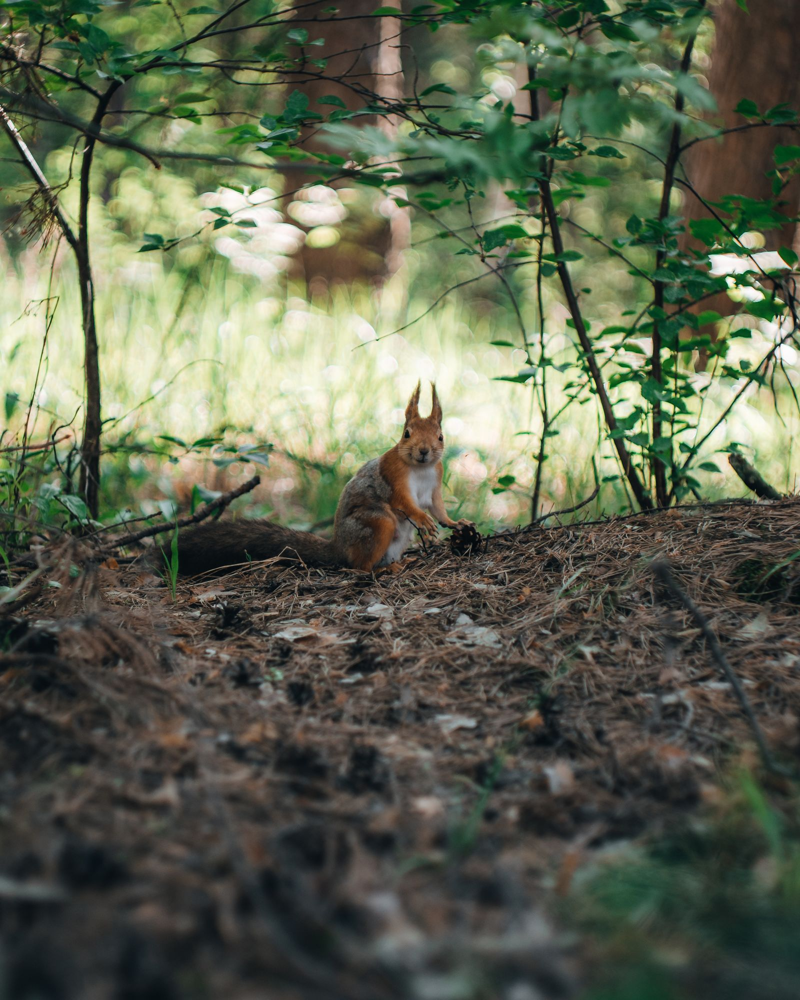
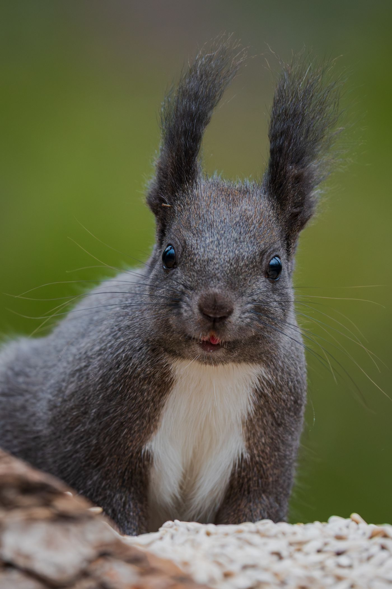
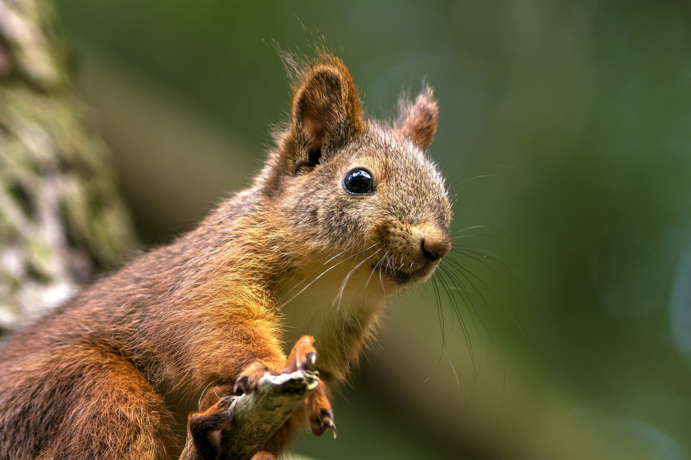

01 / MEET YOUR NEIGHBOR
有些生命，
天生自由。
它轻巧地穿过枝叶，把每一次跳跃都变成一场小小的飞行。在我们看不见的树冠之间，藏着一整个充满惊喜的世界。
Sciurus vulgaris · 欧亚红松鼠
THE FOREST HAS A THOUSAND STORIES.02 藏不住的好奇

A LITTLE WILD. A LOT OF WONDER.
一双亮晶晶的眼睛，一条蓬松的大尾巴。
关于松鼠的故事，从抬头看见树梢开始。
它轻巧地穿过枝叶，把每一次跳跃都变成一场小小的飞行。在我们看不见的树冠之间，藏着一整个充满惊喜的世界。
Sciurus vulgaris · 欧亚红松鼠

真正的森林生活家，不需要太多行李。利落的爪子、灵活的身体，再加上一点点聪明，就足够把树冠当作家。

尖锐的爪子帮助它抓住树皮，蓬松的尾巴则在奔跑和跳跃时协助平衡。树枝之间的距离，在它眼里只是下一次起跳的邀请。
停下来，看看这位树梢邻居的一天。
大自然里最动人的故事，有时就在我们抬头的那一刻。